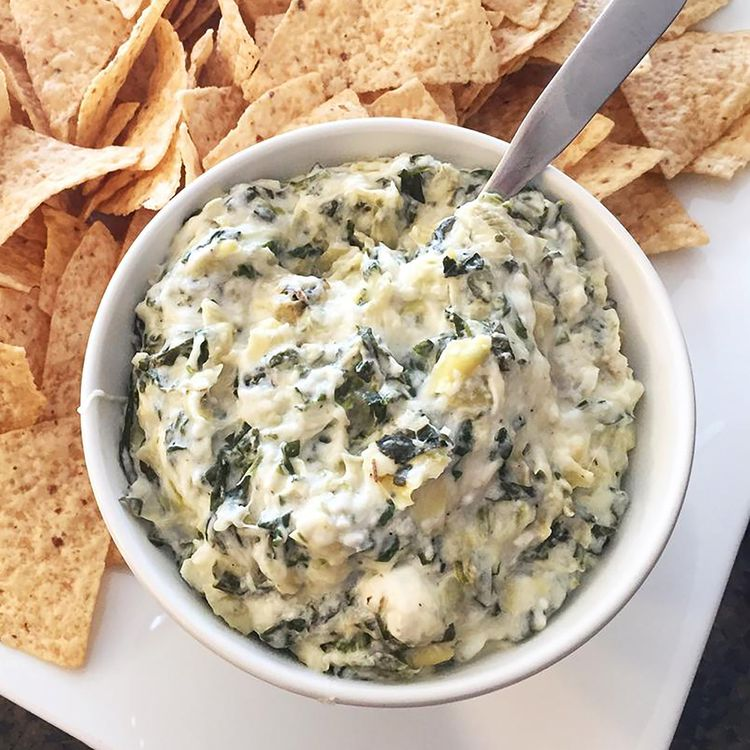

Hot Spinach Artichoke Dip

Description
Spinach artichoke dip is the best (and most delicious) way to get any party started. This crowd-pleasing spinach artichoke dip recipe is sure to be a hit with your friends and family
Ingredients
- 8 ounce package of cream cheese: This satisfying spinach artichoke dip starts with a block of cream cheese.
- 1/4 cup Mayonnaise: mayonnaise lends creaminess and a welcome tangy flavor.
- 1/4 cup Parmesan and Romano cheese: You'll need grated Parmesan, grated Romano, and shredded mozzarella.
- 1 clove garlic: A clove of minced garlic takes the flavor up a notch.
- 1/2 teaspoon dried basil
- 1/2 teaspoon garlic salt
- salt and pepper to taste
- 1 can artichoke hearts: Drain a and chop one can of artichoke hearts.
- 1/2 cup spinach: Thawed and drained frozen spinach os perfect for this easy recipe.
- 1/4 cup shredded mozzarella cheese
Steps
- Preheat the oven to 350 degrees F (175 degrees C). Lightly grease a small baking dish.
- Mix cream cheese, mayonnaise, Parmesan cheese, Romano cheese, garlic, basil, garlic salt, salt, and pepper together in a medium bowl. Gently stir in artichoke hearts and spinach.
- Transfer the mixture to the prepared baking dish; top with mozzarella cheese. Bake in the preheated oven until bubbly and lightly browned, about 25 minutes.